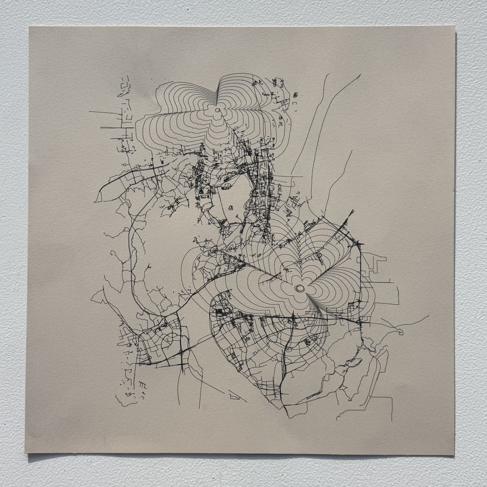

Uneven Geography
CNC drawing · On paper · 16″ × 16″

This drawing begins with a vector map of a place connected to my personal history. One flower-like contour expands from the hospital where I was born, and another from the area where I grew up. I used these layered contours to give those locations greater emphasis within the map. A conventional map treats roads and locations as objective information, but our experience of a place is rarely organized in the same way. Some places become more prominent through memory and attachment, while others fade into the background. As the contours spread through the road network, they sometimes blend with its geometry and sometimes sit more visibly on top of it.